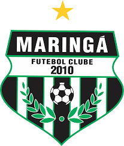

O Maringá Futebol Clube é um clube de futebol brasileiro sediado na cidade de Maringá, no estado do Paraná. Disputa o Campeonato Paranaense de Futebol e manda suas partidas no Estádio Willie Davids, em Maringá, com capacidade para 21.600 espectadores.
Campeonato Paranaense de Futebol, Campeonato Brasileiro de Futebol - Série D